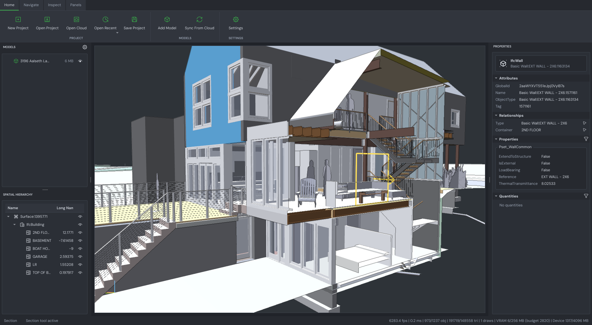
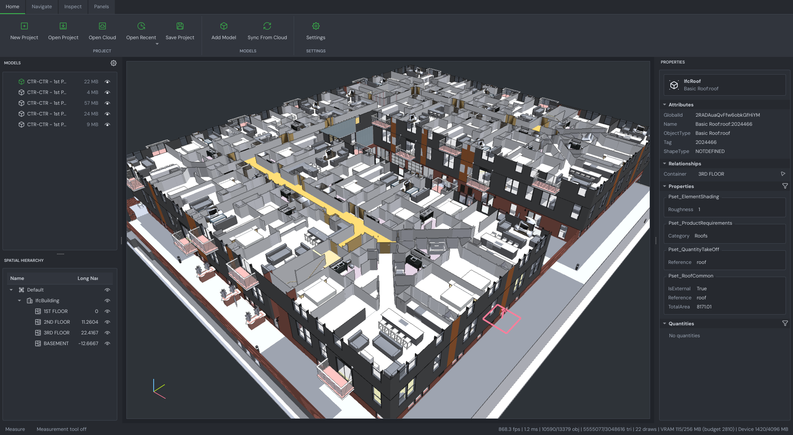
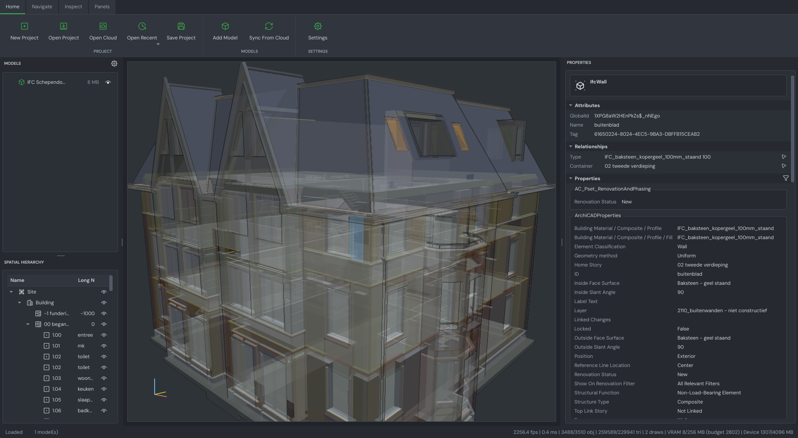

Review models, fast
A fast, lightweight desktop viewer for IFC. Open big models in seconds, navigate geometry and data, save views, search and filter, and coordinate with your team without the full authoring environment.
Free & open source. Windows, macOS & Linux.

Model: Aalseth Residence by OpeningDesign and project team, CC BY-SA 4.0

Model: The Current (CTR) by OpeningDesign and project team, CC BY-SA 4.0
Open big models in seconds
Powered by the IfcOpenShell geometry engine, Viewer streams large, georeferenced, multi-model federations smoothly so you can orbit, walk, and inspect without waiting.

Model: Schependomlaan dataset, buildingSMART sample files
Every property, one search away
Search and filter to isolate exactly what matters, colour-code by any property, save the view, and turn what you find into clashes and BCF issues for the whole team.
Everything you need to review
From a quick look to full coordination, all in one fast desktop app.
Saved views
Bookmark camera angles, filters, and states, then jump straight back to them.
Search
Find any element by name, class, property, or attribute in seconds.
Filter & colour code
Filter the model and colour-code elements by any property or classification.
Bulk edit with spreadsheets
Export to a spreadsheet, edit in bulk, and load your changes back in.
Audit with IfcTester / IDS
Validate models against IDS requirements and produce audit reports.
Clash detection
Find geometric clashes within and between models, grouped and reviewable.
BCF issue management
Create, track, and exchange coordination issues with the open BCF standard.
Model federation
Georeferencing-aware federation of multiple models into one coordinated scene.
Cloud sync
Sync models and issues to the cloud to review and collaborate with your team.
Get Bonsai Viewer
Free software, forever. If it helps your work, help us build more of it.
$ raised of $5,000 goal per month